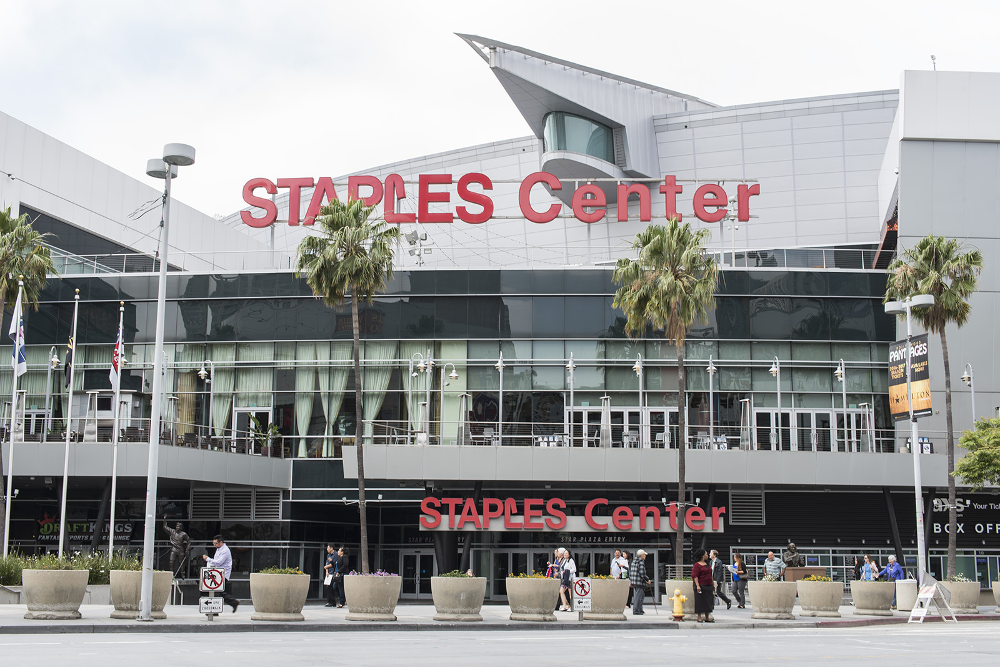
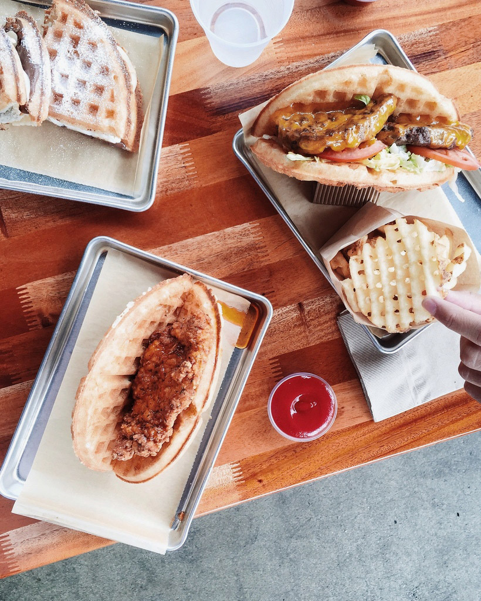
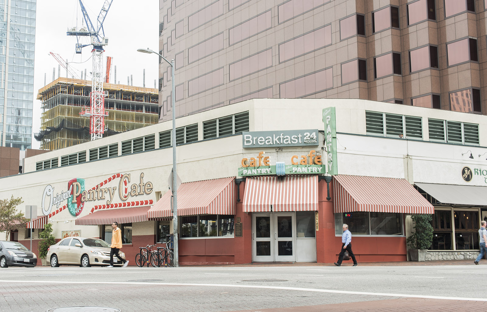
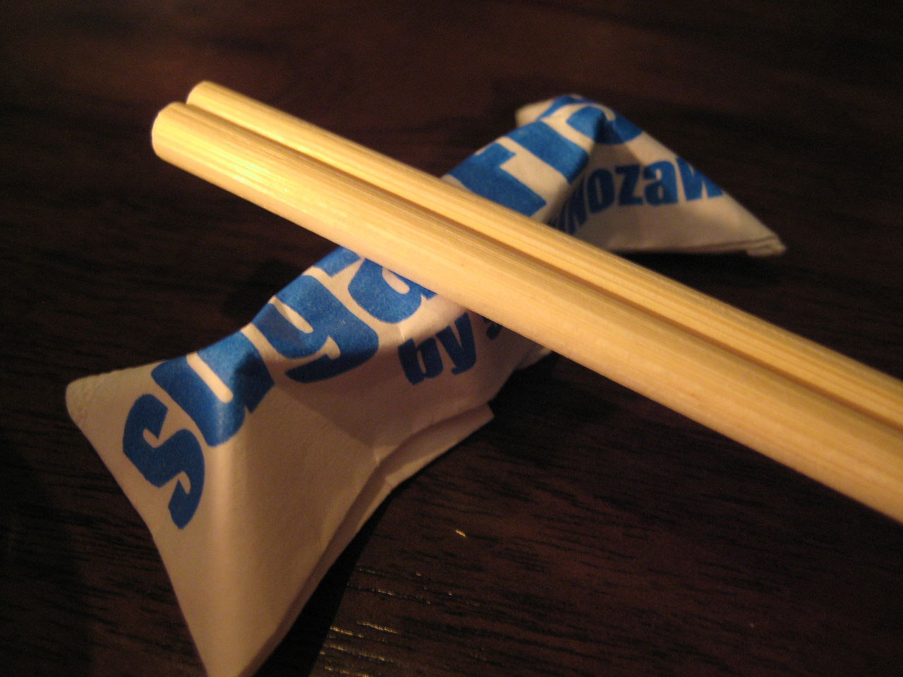

Places to check out along the Expo Line
By Erin Nyren and Nate Nickolai
The Shrine
A little over a block west of the Jefferson/USC station in Inglewood, the Shrine Auditorium & Expo Hall has hosted many artists and concerts since 1926. In April, the Canadian synthpop star Grimes played a show, which Alex Camacho, a first-year art student, attended.
Camacho said the moment they got out of the car, the Shrine was right in front of them. The inside of the Shrine had nice wallpaper, mirrors all over the walls and high ceilings. It was her first time there but she was curious to see it since she knew it was part of USC student culture and was interested to see what that was like, she said. She’d heard the name mentioned by other people before and decided to tag along with some friends to see Grimes. However, it took an hour to get there by Uber, and costed them $60 to split between three people.
With the addition of the West Los Angeles segment of the Metro Expo Line, Camacho said she would be more likely to go to the Shrine since it would be cheaper to take the expo. Taking the bus from UCLA to the Westwood station and the Expo Line to the Shrine costs less than taking an Uber. She said she tries to leave Westwood once a week, and takes public transportation about one-third of the time.
Staples Center
Around the corner from the downtown Los Angeles Pico station, The Staples Center provides a venue for sporting events and music concerts, holding over 18,000 people within its tall, circular walls.
At the Staples Center, students can watch the Los Angeles Lakers play a basketball game at their home stadium or sing along with bands like The Who, which will come to the venue on May 25 for their “The Who hits 50!" tour.
Vishal Dobaria traveled down the 405 to the Staples Center for Kobe Bryant’s last game. From sky-high seats near the top of the stadium, Dobaria, a first-year microbiology, immunology and molecular genetics student, said he enjoyed watching the game because of the energetic atmosphere. He added that the crowd cheered every time the ball landed in Kobe’s hands even though he only played for nine minutes.
Despite a great game, Dobaria said the Uber drive to the Staples Center was not worth the time, taking over an hour and a half and costing him and his friends $30.
Dobaria said the Expo Line would make going to downtown Los Angeles much easier and more cost effective, so he would definitely take advantage of the new stations.
Bruxie
A five minute walk from the downtown Santa Monica station, the chicken and waffle restaurant Bruxie provides greasy snacks for students walking down the Third Street Promenade. The restaurant offers both savory chicken dinners like the Classic Waffle Sandwich and sweet waffle desserts like the Seasonal Creme Brulee.
The sleek, metal decorations offer patrons both indoor and outdoor seating surrounded by urban walls, taking up a small storefront next to the handbag store Fossil.
Idean Roohani, a fourth-year biology student, said he went to Bruxie’s because of its double options of dinner and dessert dishes. Along with chicken and waffles, the restaurant also offers hamburgers in a waffle bun, salads and breakfast plates with eggs, bacon and of course waffles.
Roohani drove to the restaurant using his car, which he has kept at UCLA since last year. He added that when he was a student without a car, he rarely left campus.
Roohani said although the Expo Line is convenient, his car is more useful for getting around off campus, so he would not use the new stations.
The Pantry
The Original Pantry Cafe serves mid-price diner fare and is now accessible with the addition of the West LA segment of the Expo. Jenny Nardoni, a first-year undeclared social sciences student, dined at the restaurant twice before making the short walk to the Staples Center.
Nardoni said with the new Expo Line addition, she is more likely to go to the Pantry. She drove with her family from their home in Burbank the past few times she has eaten at the Pantry, but since she doesn’t have a car on campus, driving isn’t an option. They sat at the bar, and said that she liked the casual atmosphere.
“You can see the people making the food and it’s just a really small space," she said. “It felt really homey and it felt like a diner."
Nardoni used public transportation at least once per week while she attended summer school, since the group of friends she spent the most time with understood the public transportation system well. She hasn’t used public transportation as much during the school year, preferring Uber or Lyft to public transportation since she isn’t as comfortable using the public transportation system and thinks taking Uber is easier. Although Uber is more expensive, she said traveling with multiple people cuts down the cost. She wasn’t aware of the Westwood Expo expansion, which she thought was indicative of the poor state of Los Angeles’s public transportation.
“I don’t feel like (public transportation use) is common," Nardoni said. “Maybe if it becomes bigger, I’ll learn more."
Sugarfish
Marsha Haezer went to the Sugarfish in downtown Santa Monica with her boyfriend for Valentine’s Day this year. Haezer, a first-year vocal performance student, waited over two hours for a table in the small restaurant, but she said the wait was worth the thick slices of sushi and the precisely chosen fish.
With locations across Los Angeles, the high-end sushi restaurant Sugarfish has storefronts near two Expo Line stations, the downtown Santa Monica stop and the 7th St./Metro Center stop in downtown Los Angeles.The restaurant offers individual sushi dishes ranging around $6 and more expensive pre-selected sushi dinners.
Haezer said her boyfriend drove them to the restaurant in his car that he parks on campus. But she added that she would use the new Expo Line stations once they opened.
“When I’m just with my friends, we want to go out, but sometimes we’ll just end up using Uber," Haezer said. “If there are more opportunities to go (on the Expo Line) and more stops ... I would definitely take advantage of that."